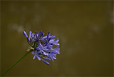
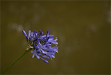

Portfolio and Services
Some of My Services...
As a travel photographer I have worked with several travel and marketing agencies, magazines, and bloggers. I provide appealing visual content for social media, magazines, blogs, online travel guides, marketing material, and newspapers. Additionally, I work as a freelance hotel & resort photographer with the main purpose of making hotels shine and thrive in the eyes of possible guests.
Furthermore, I also provide stock photography services. I work with stock photography agencies like Adobe Stock, iStock, Shutterstock, and Photocase. Below I will provide some of my stock portfolio; however, you can check my whole work if you search my name within the previously mentioned stock agencies' portals. In addition, I provide personalized photo shootings for enterprises, small businesses, and people.
Portfolio
Travel Photography
Travel photography is one of my biggest passions. I love and enjoy to capture astounding scenes and moments alognside my trips; from busy and noisy urban scenarios to peaceful and exotic natural landscapes, from wild animals to cute puppies, every sigle photography that convey what one thousand words could not and have a story behind that it is worth sharing to the general public. It is fascinating to witness all the wonders that planet earth has to offer when exploring. Travelling is definitely the best nourishment for the soul and for the mind, it is an style of living that I encourage everyone to experience at least one in a lifetime, and I do so througout my photography. I hope this portfolio can inspire you take the first step to the biggest adventure of your life.
 



Stock Photography
Stock photography is a discipline that I perform with deep love and professionalism. I stick to current trends and take into consideration needs from enterprises, small businesses from multiple industries, and creatives working in marketing, videography, and web development. I feature mostly people and animals, but I also create stock visual content having as main subject landscapes and interior designs. My work is featured in both microstock and macrostock agencies. Depending on your needs and expectations you can check my work in either type of agencies. The main agencies I upload works in are Adobe Stock, iStock, Shutterstock, and Photocase. I do appreciate working in stock photography because it allows me to develop and expand my creative and my professional potential as photographer.